If there is one prayer that you should pray/sing every day and every hour, it is the
LORD's prayer (Our
FATHER in Heaven prayer)
- Samuel Dominic Chukwuemeka
It is the most powerful prayer.
A pure heart, a clean mind, and a clear conscience is necessary for it.
For in GOD we live, and move, and have our being.
- Acts 17:28
The Joy of the Teacher is the Success of the Students.
- Samuel
Chukwuemeka
Triangles

I greet you this day,
First: read the notes.
Second: view the videos.
Third: solve the questions/solved examples.
Fourth: check your solutions with my thoroughly-explained solutions on:
Right
Triangles and
Triangles
Fifth: check your answers with the
Calculators as
applicable.
Comments, ideas, areas of improvement, questions, and constructive criticisms are welcome.
You may contact me.
If you are my student, please do not contact me here. Contact me via the school's system.
Thank you for visiting.
Samuel Dominic Chukwuemeka (SamDom For Peace) B.Eng., A.A.T, M.Ed., M.S
Objectives
Students will:
(1.) Discuss triangles.
(2.) Classify triangles.
(3.) Discuss the theorems on triangles.
(4.) Discuss the laws on triangles.
(5.) Determine the mensuration of triangles.
(6.) Discuss congruent triangles.
(7.) Discuss similar triangles.
(8.) Determine the trigonometric ratios of the angles of a right triangle.
(9.) Solve applied problems on triangles.
Introduction
A Triangle is a polygon with three sides and three angles.
Triangles can be classified by:
(I.) Sides (Side Classification)
(II).) Angles (Angle Classification)
Side Classification of Triangles
(1.) Scalene Triangle is a triangle with three unequal sides.
This also implies that it has three unequal angles.
(2.) Isosceles Triangle is a triangle with two equal sides.
This also implies that it has two equal angles.
In an Isosceles Triangle:
The two equal sides are known as the legs.
The included angle (angle between the two equal sides) is known as the Vertex Angle
The other side is known as the base.
The two equal angles adjacent to the base are known as the base angles.
Example:
curriculum.gov.mt Work out the size of the angle marked a
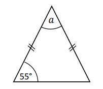
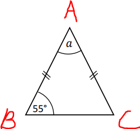
$ \underline{\triangle ABC} \\[3ex] \angle ABC = \angle ACB = 55^\circ ...base\;\;\angle s\;\;of\;\;isosceles\;\;\triangle ABC \\[3ex] \angle ABC + \angle ACB + \angle BAC = 180^\circ...sum\;\;of\;\;\angle s\;\;of\;\;\triangle ABC \\[3ex] \implies \\[3ex] 55 + 55 + a = 180 \\[3ex] 110 + a = 180 \\[3ex] a = 180 - 110 \\[3ex] a = 70^\circ $
(3.) Equilateral Triangle is a triangle with three equal sides.
This also implies that it has three equal angles (equiangular)
Equi means equal
lateral means sides
angular means angles
So, we have: Equilateral (equal sides) and Equiangular (equal angles)
Teacher: What is the angle in an equilateral triangle?
Let the angle in an equilateral triangle = $x$
$
x + x + x = 180 ... sum\:\: of\:\: \angle s\:\: in\:\:a\:\: \triangle \\[3ex]
3x = 180 \\[3ex]
x = \dfrac{180}{3} \\[5ex]
x = 60^\circ \\[3ex]
$
Each of the angles in an equilateral triangle is $60^\circ$
Angle Classification of Triangles
(1.) Acute Triangle is a triangle with three acute angles.
Is the equilateral triangle an acute angle? What are your reason(s)?
The Equilateral Triangle is also an Acute Triangle because each of the three angles, $60^\circ$ in
an equilateral triangle is an acute angle.
(2.) Right Triangle is a triangle with one right angle (an angle of $90^\circ$) and two acute
angles.
What may we call a $\boldsymbol{45^\circ - 45^\circ - 90^\circ}$?
A Right Isosceles Triangle
Right Triangle - because it has a right angle
Isosceles Triangle because it has two equal angles, each of which is $45^\circ$
(3.) Obtuse Triangle is a triangle with one obtuse angle and two acute angles.
This means that one of the angles in an Obtuse Triangle is greater than $90^\circ$ but less than
$180^\circ$.
(4.) Oblique Triangle is a triangle that does not have a right angle.
This means that Acute Triangles and Obtuse Triangles are Oblique
Triangles.
Based on the Sum of Angles of a Triangle Theorem (Sum of the angles of a triangle is
$180^\circ$):
An Oblique triangle has:
(a.) Three acute angles OR
(b.) Two acute angles and an obtuse angle
Similar Triangles
Section 2
Triangle Theorems and Laws
Demonstrate each theorem. Explain it well.
Use several examples to enhance understanding.
As applicable:
For Right Triangles
Let:
$
hyp = hypotenuse \\[3ex]
angles = \alpha,\;\; \beta, \;\;and\;\; 90 \\[3ex]
sides = short,\;\; middle,\;\;and\;\; hyp \\[3ex]
OR \\[3ex]
sides = leg,\;\;leg,\;\;and\;\;hyp \\[3ex]
hyp = long \\[3ex]
sides = short,\;\; middle,\;\; long \\[3ex]
$
The hypotenuse of a right triangle is the side opposite the right angle.
It is the longest side of a right triangle.
For All Other Triangles
Let:
$
angles = \alpha,\;\; \beta, \;\;and\;\; \theta\;\; OR \\[3ex]
angles = A,\;\; B, \;\;and\;\; C \\[3ex]
sides = a,\;\; b, \;\;and\;\; c \\[3ex]
2\;\; equal\;\; sides = side1,\;\; side2 = side \\[3ex]
3\;\; equal\;\; sides = side1,\;\; side2,\;\; side3 = side \\[3ex]
unequal\;\; sides = short,\;\; middle,\;\; long \\[3ex]
$
(1.) Sum of Angles of a Triangle Theorem:
The sum of the angles of a triangle is $180^\circ$
Right Triangle: $\alpha + \beta + 90 = 180$
Other Triangles: $\alpha + \beta + \theta = 180$
(2.) $\boldsymbol{30^\circ - 60^\circ - 90^\circ}$ Right Triangle Theorem 1:
In a $\boldsymbol{30^\circ - 60^\circ - 90^\circ}$ right triangle; the length of the hypotenuse
is twice the length of the short side.
$hyp = 2 * short$
(3.) $\boldsymbol{30^\circ - 60^\circ - 90^\circ}$ Right Triangle Theorem 2:
In a $\boldsymbol{30^\circ - 60^\circ - 90^\circ}$ right triangle; the length of the middle side
is the square root of $3$ times the length of short side.
$middle = \sqrt{3} * short$
(4.) $\boldsymbol{45^\circ - 45^\circ - 90^\circ}$ Right Triangle Theorem (Right Isosceles Triangle
Theorem):
In a $\boldsymbol{45^\circ - 45^\circ - 90^\circ}$ right triangle (a Right Isosceles
Triangle); the length of the hypotenuse is the square root of $2$ times the length of either
side.
A $\boldsymbol{45^\circ - 45^\circ - 90^\circ}$ is a right isosceles triangle.
An isosceles triangle has two equal sides.
Therefore, a $\boldsymbol{45^\circ - 45^\circ - 90^\circ}$ has two equal sides.
$
hyp = \sqrt{2} * side1 \\[3ex]
hyp = \sqrt{2} * side 2 \\[5ex]
$
Applies only to right triangles.
Classroom Activity
Teacher: Hosea, please come.
Take that chair and mark as your starting point.
Walk four steps in a horizontal line.
Then, turn around at an angle of 90°
In other words, rotate left 90°
Walk three steps in a vertical line.
Then, turn towards me to face me.
If I asked you to come to me, how many steps would you walk to reach me?
Student: About 5 steps I guess...
Ask your students and note their responses.
Ask them to give reasons for their answers.
Teacher: About...indicates you are not so sure?
Well, it is 5 steps.
That is correct.
But, how did you get 5 steps?
Student: Mr. C, it's just a guess...a correct guess.
I'll just walk towards you 😊
Teacher: Let's find out.
Welcome to the Pythagorean Theorem
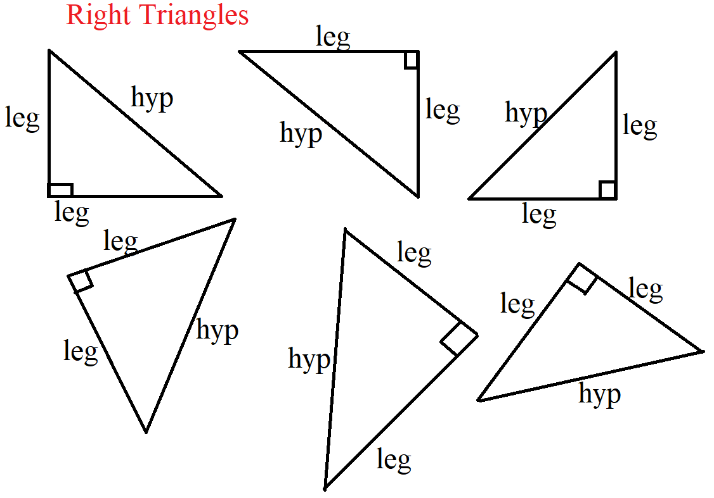
It states that:
In a right triangle, the square of the length of the hypotenuse is the sum of the squares of the short side and the middle side.
$hyp^2 = short^2 + middle^2$
OR
In a right triangle, the square of the length of the hypotenuse is the sum of the squares of the other two sides.
$hyp^2 = leg^2 + leg^2$
Example:
ACT What is the length, in inches, of the hypotenuse of a right triangle with a leg that is 9 inches long and a leg that is 2 inches long?
$ A.\;\; \sqrt{22} \\[3ex] B.\;\; \sqrt{77} \\[3ex] C.\;\; \sqrt{85} \\[3ex] D.\;\; 5.5 \\[3ex] E.\;\; 11 \\[3ex] $
$ hyp^2 = leg^2 + leg^2 ...Pythagorean\:\: Theorem \\[3ex] leg = 9 \\[3ex] leg = 2 \\[3ex] hyp^2 = 9^2 + 2^2 \\[3ex] hyp^2 = 81 + 4 = 85 \\[3ex] hyp = \sqrt{85} \\[3ex] $
Applications of Pythagorean Theorem
Check for prior knowledege: Ask students to discuss any buidling/shape/object/item/scenario/concept
where they have
seen a right triangle.
Recall that the Pythagorean Theorem is only applicable to right triangles.
(1.) Construction Industry:
Relate to the construction of staircases, flower beds, and roofs among others.
Here is an example: Question (24.) on Right Triangles
(2.) Navigation:
Relate to bearings and distances.
Here is an example: Question (2.) on Bearings and Distances
(3.) Land Surveying: Drawing land boundaries:
(Si.427 dates from the Old Babylonian (OB) period – 1900 to 1600 BCE)
(Notice that the Babylonians used Pythagorean theorem at least 1000 years before Pythagoras was
born)
Pythagorean Triple is a set of three positive integers that fits the Pythagorean Theorem.
Examples of Pythagorean Triples are:
$
\underline{Example\;\;1} \\[3ex]
3,\;\;4,\;\;5 \\[3ex]
Because: \\[3ex]
3^2 + 4^2 = 5^2 \\[3ex]
9 + 16 = 25 \\[5ex]
\underline{Example\;\;2} \\[3ex]
6,\;\;8,\;\;10 \\[3ex]
Because: \\[3ex]
6^2 + 8^2 = 10^2 \\[3ex]
36 + 64 = 100 \\[5ex]
$
Constructing a triangle whose sides form a Pythagorean Triple is an accurate way of creating a right
triangle.
This is beneficial in marking out accurate rectangles of land boundaries, in the sense that two right
triangles
make a rectangle where the diagonal of the rectangle is the hypotenuse.
Activity/Critical Thinking/Construction:
(1.) Ask students to explain the relationship between the first two examples.
In other words, given Example 1; how did we derive Example 2?
(2.) Based on only the two examples, ask students to derive/list more Pythagorean Triples.
(3.) Extra Time/Activity: Teach students to construct right traingles based on Pythagorean Triples.
(6.) Converse of the Pythagorean Theorem (Right Triangle Theorem):
If the square of the long side(hypotenuse) is the
sum of the squares of the other two sides, then the triangle is a right triangle.
$long^2 = short^2 + middle^2$
(7.) Acute Triangle Theorem:
If the square of the long side is less than the sum of the squares of the other two sides,
then the triangle is an acute triangle.
(8.) Obtuse Triangle Theorem:
If the square of the long side is greater than the sum of the squares of the other two sides, then the triangle is an obtuse triangle.
Example:
ACT Which of the following sets of $3$ lengths, in decimeters, are the side lengths of an obtuse triangle?
(Note: An obtuse triangle has $1$ angle whose measure is greater than $90^\circ$ and less than $180^\circ$.)
$ F.\:\: \{4, 4, 5\} \\[3ex] G.\:\: \{5, 12, 13\} \\[3ex] H.\:\: \{6, 8, 10\} \\[3ex] J.\:\: \{7, 10, 12\} \\[3ex] K.\:\: \{8, 11, 16\} \\[3ex] $
Let us find the squares of the sides of the triangle.
$ \underline{Test} \\[3ex] F.\:\: \{4, 4, 5\} \\[3ex] 4^2 = 16 \\[3ex] 4^2 = 16 \\[3ex] 5^2 = 25 \\[3ex] 25 \lt (16 + 16) \\[3ex] 25 \lt 32 ...Acute\:\: Triangle ...NO \\[3ex] G.\:\: \{5, 12, 13\} \\[3ex] 5^2 = 25 \\[3ex] 12^2 = 144 \\[3ex] 13^2 = 169 \\[3ex] 169 = 25 + 144 \\[3ex] 169 = 169 ...Right\:\: Triangle ...NO \\[3ex] H.\:\: \{6, 8, 10\} \\[3ex] 6^2 = 36 \\[3ex] 8^2 = 64 \\[3ex] 10^2 = 100 \\[3ex] 100 = 36 + 64 \\[3ex] 100 = 100 ...Right\:\: Triangle ...NO \\[3ex] J.\:\: \{7, 10, 12\} \\[3ex] 7^2 = 49 \\[3ex] 10^2 = 100 \\[3ex] 12^2 = 144 \\[3ex] 144 \lt (49 + 100) \\[3ex] 144 \lt 149 ...Acute\:\: Triangle ...NO \\[3ex] K.\:\: \{8, 11, 16\} \\[3ex] 8^2 = 64 \\[3ex] 11^2 = 121 \\[3ex] 16^2 = 256 \\[3ex] 256 \gt (64 + 121) \\[3ex] 256 \gt 185 ...Obtuse\:\: Triangle ...YES $
(9.) Triangle Inequality Theorem:
This is the theorem that determines if you can form a triangle using any three lengths.
The sum of the lengths of any two sides of a triangle is greater than the length of the third side.
Right Triangle
$ hyp + short \gt middle \\[3ex] hyp + middle \gt short \\[3ex] short + middle \gt hyp \\[3ex] $ Other Triangles
$ long + short \gt middle \\[3ex] long + middle \gt short \\[3ex] short + middle \gt long \\[3ex] side1 + side2 \gt short \\[3ex] side1 + side2 \gt long \\[3ex] side1 + side2 \gt side3 \\[5ex] $ Example:
ACT A triangle has sides of length 2.5 feet and 4 feet.
Which of the following CANNOT be the length of the third side, in feet?
$ F.\;\; 1 \\[3ex] G.\;\; 2 \\[3ex] H.\;\; 3 \\[3ex] J.\;\; 4 \\[3ex] K.\;\; 5 \\[3ex] $
$ \underline{Triangle\;\;Inequality\;\;Theorem} \\[3ex] Option\;\:F \\[3ex] 1 + 2.5 \lt 4 \\[3ex] 3.5 \lt 4 ...No,\;\;it\;\;cannot...Correct\;\;Option \\[3ex] Option\;\; G \\[3ex] 2 + 2.5 \gt 4 \\[3ex] 4.5 \gt 4...Yes,\;\;it\;\;can \\[3ex] Option\;\; H \\[3ex] 3 + 2.5 \gt 4 \\[3ex] 5.5 \gt 4...Yes,\;\;it\;\;can \\[3ex] Option\;\; J \\[3ex] 4 + 2.5 \gt 4 \\[3ex] 6.5 \gt 4...Yes,\;\;it\;\;can \\[3ex] Option\;\; H \\[3ex] 5 + 2.5 \gt 4 \\[3ex] 7.5 \gt 4...Yes,\;\;it\;\;can $
(10.) Side Length - Angle Measure Theorem:
If any two side lengths of a triangle are unequal; the angles of the triangle are also unequal,
and the measure of an angle is opposite the length of the side facing that angle as regards size.
The measure of the smallest angle is opposite the shortest side length.
The measure of the greatest angle is opposite the longest side length.
The measure of the middle angle is opposite the middle side length.
In other words; regarding size, the measure of an angle is opposite the length of the side facing the
angle; or
the side length facing an angle is opposite the angle measure as regards size.
Small side faces small angle, middle side faces middle angle, big side faces big angle
Right Triangle
$
Let\:\: \alpha \lt \beta \lt 90 \\[3ex]
\alpha \:\:is\:\: the\:\: angle\:\: opposite\:\: short \\[3ex]
\beta \:\:is\:\: the\:\: angle\:\: opposite\:\: middle \\[3ex]
90 \:\:is\:\: the\:\: angle\:\: opposite\:\: hyp \\[3ex]
$
Other Triangles
$
Let\:\: \alpha \lt \beta \lt \theta \\[3ex]
\alpha \:\:is\:\: the\:\: angle\:\: opposite\:\: short \\[3ex]
\beta \:\:is\:\: the\:\: angle\:\: opposite\:\: middle \\[3ex]
\theta \:\:is\:\: the\:\: angle\:\: opposite\:\: long \\[5ex]
$
(11.) Exterior Angle of a Triangle Theorem:
The exterior angle of a triangle is the sum of the two interior opposite angles.
(12.) Isosceles Base Angles Theorem:
The base angles of an isosceles triangle are equal.
(13.) Converse of the Isosceles Base Angles Theorem:
If the base angles of a triangle are equal, then the triangle is an isosceles triangle.
(14.) Perpendicular Bisector of the Base of an Isosceles Triangle Theorem:
It states that if a line bisects the vertex angle of an isosceles triangle, then the line is also the
perpendicular
bisector of the base (the line also bisects the base of that isosceles triangle at right angles).
(15.) Perpendicular Height to Base of Isosceles Triangle Theorem
It states that the perpendicular height drawn from the apex of an isosceles triangle to the base:
(a.) bisects the base
(b.) bisects the apex angle.
Example:
curriculum.gov.mt The height of the isosceles triangle is 30 cm and the base is 20 cm.
What is the value of tan P?
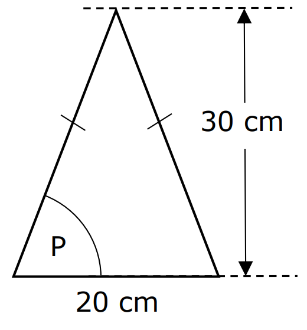
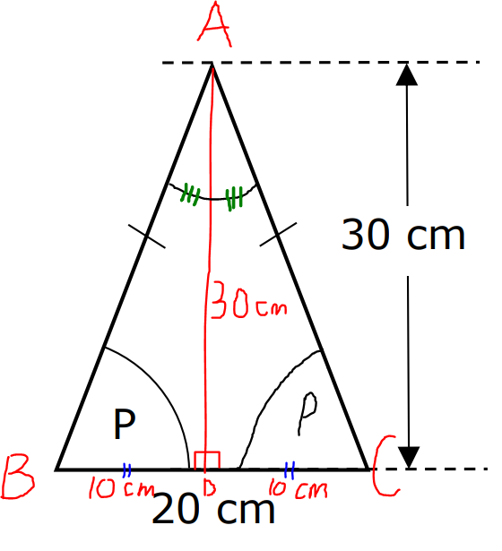
$ \angle ABC = \angle ACB ...base\;\;\angle s\;\;of\;\;isosceles\;\;\triangle \\[3ex] \underline{height\;\;drawn\;\;from\;\;the\;\;apex\;\;of\;\;an\;\;isosceles\;\;\triangle\;\;bisects\;\;the\;\;base} \\[3ex] \angle BAD = \angle CAD \\[3ex] BD = DC = 10\;cm \\[3ex] \tan P = \dfrac{30}{10} ...SOHCAHTOA \\[5ex] \tan P = 3 $
(16.) Sine Law:
Applies to all triangles.
It states that the ratio of the side length of any triangle to the sine of the angle measure opposite
that side is the
same for the three sides of the triangle.
$
\dfrac{a}{\sin A} = \dfrac{b}{\sin B} = \dfrac{c}{\sin C} \\[5ex]
$
OR
The ratio of the angle measure of any triangle to the side length opposite that angle is the same for
the
three angles of the triangle.
$
\dfrac{\sin A}{a} = \dfrac{\sin B}{b} = \dfrac{\sin C}{c} \\[5ex]
$
Sine Law is used for:
(a.) $ASA$ when given two angles and a "common" side ("common" side is the side length between the two
angles) OR
(b.) $SAA$ when given a side and two angles (side is not common) OR
(c.) $SSA$ when given two sides and a "non-included" angle. (A "non-included" angle is the angle that
is not in-between the two sides).
This is the Ambiguous Case.
Student: What do you mean by the "Ambiguous Case"?
Teacher: The $SSA$ is an Ambiguous Case because this case may result in no triangle, one triangle,
or
one right triangle, or two triangles. The number of solutions depends on those two side lengths and
the "non-included" angle.
Show students the various triangles that could be formed based on the two side lengths and the
"non-included" angle.
For the $\boldsymbol{SSA}$ case:
Given: two side lengths: $a$ and $b$ and a "non-included" angle, $A$
If:
$a \lt b\sin A$; no triangle is formed
$a = b\sin A$; one right triangle is formed
$a \gt b\sin A$ and $a \gt b$; one triangle (acute triangle or right triangle or obtuse triangle) is
formed
$a \gt b\sin A$ and $a \lt b$; two oblique triangles (one acute triangle and one obtuse triangle) are
formed
NOTE: This Ambiguous Case also works when Given:
Two side lengths: $a$ and $b$ and a "non-included" angle, $B$; compare $b$ and $a\sin B$
Two side lengths: $a$ and $c$ and a "non-included" angle, $A$; compare $a$ and $c\sin A$
Two side lengths: $a$ and $c$ and a "non-included" angle, $C$; compare $c$ and $a\sin C$
Two side lengths: $b$ and $c$ and a "non-included" angle, $B$; compare $b$ and $c\sin B$
Two side lengths: $b$ and $c$ and a "non-included" angle, $C$; compare $c$ and $b\sin C$
(17.) Cosine Law:
Applies to all triangles.
It states that the square of a side of a triangle is the difference between the sum of the squares of
the other two sides
and twice the product of the two sides and the included angle.
$
a^2 = b^2 + c^2 - 2bc \cos A \\[3ex]
\cos A = \dfrac{b^2 + c^2 - a^2}{2bc} \\[5ex]
\rightarrow A = \cos^{-1} \left(\dfrac{b^2 + c^2 - a^2}{2bc}\right) \\[5ex]
b^2 = a^2 + c^2 - 2ac \cos B \\[3ex]
\cos B = \dfrac{a^2 + c^2 - b^2}{2ac} \\[5ex]
\rightarrow B = \cos^{-1} \left(\dfrac{a^2 + c^2 - b^2}{2ac}\right) \\[5ex]
c^2 = a^2 + b^2 - 2ab \cos C \\[3ex]
\cos C = \dfrac{a^2 + b^2 - c^2}{2ab} \\[5ex]
\rightarrow C = \cos^{-1} \left(\dfrac{a^2 + b^2 - c^2}{2ab}\right) \\[5ex]
$
Cosine Law is used for:
(a.) $SAS$ when given two sides and an "included" angle ("included" angle is the angle between the two
sides) OR
(b.) $SSS$ when given three sides
(18.) Side-Splitter Theorem
Applies to all triangles with inserted parallel lines as applicable.
It states that if a line segment is parallel to one side of a triangle and intersects the other two sides of the triangle, then it divides those two sides proportionally.
Let us review examples:
Triangle in which a line is parallel to a side of the triangle.
Example Diagram 18-1:
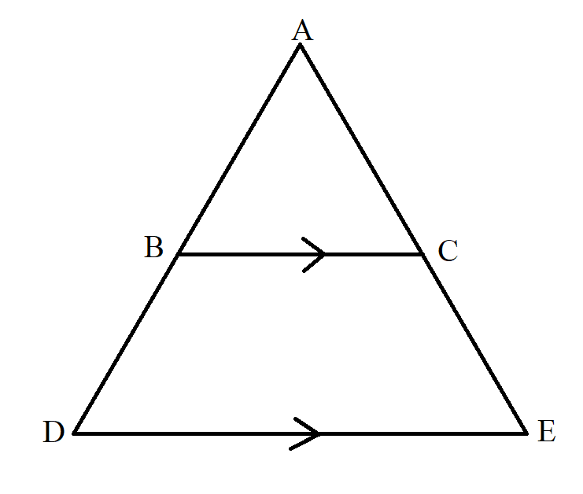
$ BC\; || \;DE \\[3ex] \dfrac{AB}{BD} = \dfrac{AC}{CE} \\[5ex] $ Example Diagram 18-2:
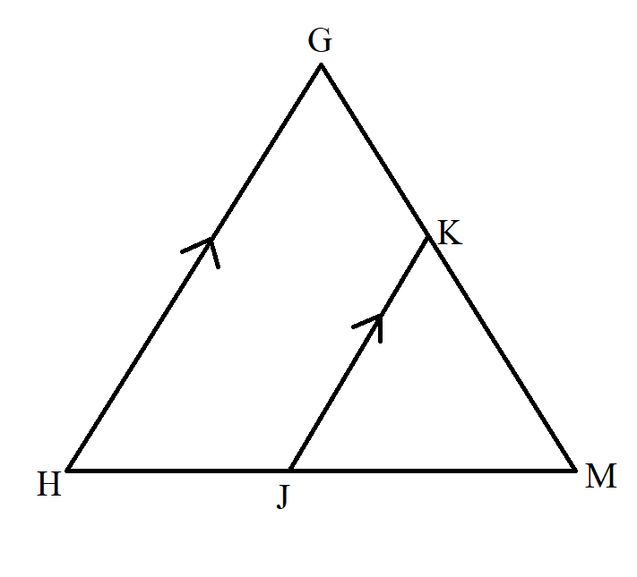
$ KJ\; || \;GH \\[3ex] \dfrac{MK}{KG} = \dfrac{MJ}{JH} \\[5ex] $ Example Diagram 18-3:
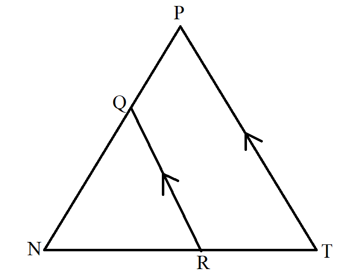
$ QR\; || \;PT \\[3ex] \dfrac{NQ}{QP} = \dfrac{NR}{RT} \\[5ex] $ Triangle in which two lines are parallel to a side of the triangle.
In this case, we have to consider/separate each set of parallel lines relative to the side of the triangle (each line that is parallel to the side of the triangle)
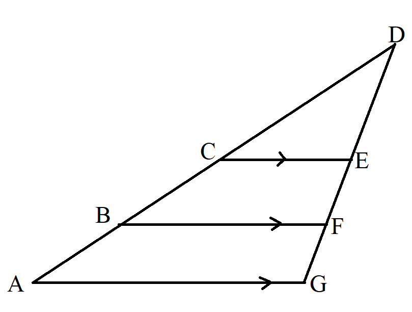
$ Side\;\;of\;\;the\;\;triangle\;\;in\;\;question = AG \\[3ex] CE \;||\; AG \\[3ex] and \\[3ex] BF \;||\; AG \\[3ex] Consider\;\;parallel\;\;lines\;\; CE \;\;and\;\; AG:\;\; \dfrac{DC}{CA} = \dfrac{DE}{EG} \\[5ex] Consider\;\;parallel\;\;lines\;\; BF \;\;and\;\; AG:\;\; \dfrac{DB}{BA} = \dfrac{DF}{FG} \\[5ex] $ Example:
ACT In the figure shown below, E and G lie on $\overline{AC}$, D and F lie on $\overline{AB}$, $\overline{DE}$ and $\overline{FG}$ are parallel to $\overline{BC}$, and the given lengths are in feet.
What is the length of $\overline{AC}$, in feet?
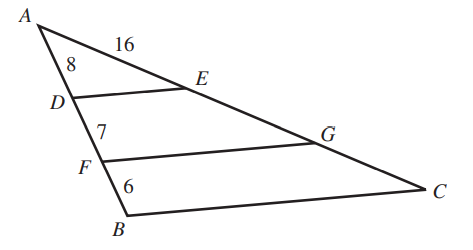
$ A.\;\; 13 \\[3ex] B.\;\; 26 \\[3ex] C.\;\; 29 \\[3ex] D.\;\; 42 \\[3ex] E.\;\; 48 \\[3ex] $
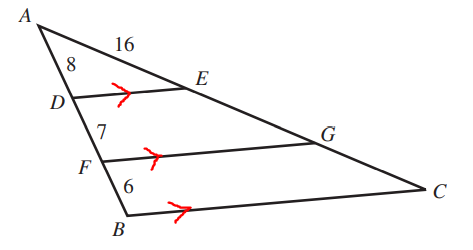
$ Consider\;\;parallel\;\;lines:\;\; \overline{DE} \;\;and\;\; \overline{BC} \\[3ex] \dfrac{\overline{AD}}{\overline{DB}} = \dfrac{\overline{AE}}{\overline{EC}} \\[5ex] \dfrac{8}{7 + 6} = \dfrac{16}{\overline{EC}} \\[5ex] \dfrac{8}{13} = \dfrac{16}{\overline{EC}} \\[5ex] 8 * \overline{EC} = 13(16) \\[3ex] \overline{EC} = \dfrac{13(16)}{8} \\[5ex] \overline{EC} = 13(2) \\[3ex] \overline{EC} = 26 \\[3ex] \overline{AC} = \overline{AE} + \overline{EC}...figure\;\;shown \\[3ex] \overline{AC} = 16 + 26 \\[3ex] \overline{AC} = 42\;units $
(19.) Midpoint Theorem
Applies to all triangles in which a line segment joins the midpoints of any two sides of the triangle.
It states that if a line segment joins the midpoints of any two sides of a triangle, then the line segment:
(a.) is parallel to the third side.
(b.) bisects the third side.
Example Diagram 19:
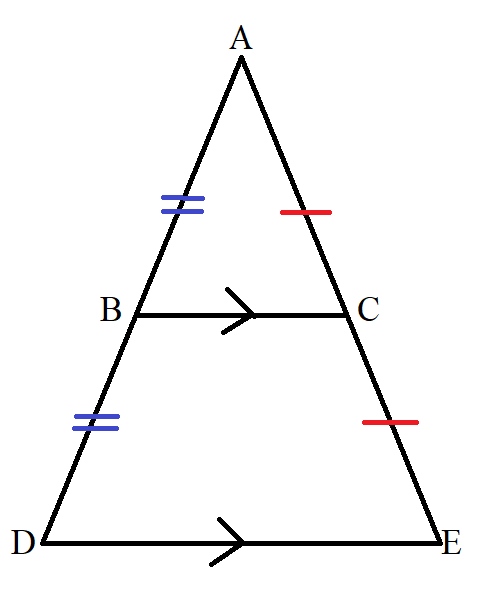
$ |AB| = |BD| \\[3ex] |AC| = |CE| \\[3ex] \implies \\[3ex] |BC| \;\; || \;\; |DE| \\[3ex] |BC| = \dfrac{|DE|}{2} \\[5ex] $
(20.) Converse of the Midpoint Theorem
A line segment drawn through the midpoint of one side of a triangle and parallel to another side,
bisects the
third side.
(21.) Scale Factor, Perimeter Ratio, and Area Ratio of Similar Figures Theorem
Applies to all similar figures including similar triangles.
It states that for two similar figures, the ratio of the perimeters is the same as the scale factor; and the ratio of the areas is the ratio of the square of the scale factor.
This implies that:
$ if: \\[3ex] Scale\;\;Factor = \dfrac{c}{d} \\[5ex] then: \\[3ex] Perimeter\;\;Ratio = \dfrac{c}{d} \\[5ex] and: \\[3ex] Area\;\;Ratio = \left(\dfrac{c}{d}\right)^2 = \dfrac{c^2}{d^2} \\[5ex] $ Example:
ACT The lengths of the sides of a triangle are 3, 8, and 9 inches.
How many inches long is the shortest side of a similar triangle that has a perimeter of 60 inches?
$ F.\;\; 9 \\[3ex] G.\;\; 11 \\[3ex] H.\;\; 20 \\[3ex] J.\;\; 24 \\[3ex] K.\;\; 27 \\[3ex] $
$ Perimeter\;\;of\;\;1st\;\;\triangle = 3 + 8 + 9 = 20\;inches \\[3ex] Perimeter\;\;of\;\;similar\;\;\triangle = 60\;inches \\[3ex] Shortest\;\;side\;\;of\;\;1st\;\;\triangle = 3\;inches \\[3ex] Shortest\;\;side\;\;of\;\;similar\;\;\triangle = p\;inches \\[3ex] \dfrac{20}{60} = \dfrac{3}{p}...Perimeter\;\;Ratio = Scale\;\;Factor \\[5ex] \dfrac{1}{3} = \dfrac{3}{p} \\[5ex] 1 * p = 3 * 3 \\[3ex] p = 9\;inches $
Triangle Postulates
Demonstrate each theorem. Explain it well.
Use several examples to enhance understanding.
(1.) Angle-Angle Similarity Postulate (AA$\sim$ Postulate)
Applies to similar triangles.
It states that two triangles are similar if two angles of one triangle are congruent to two angles of
the other
triangle.
This is typically applied in a triangle with parallel lines (parallel lines in a triangle).
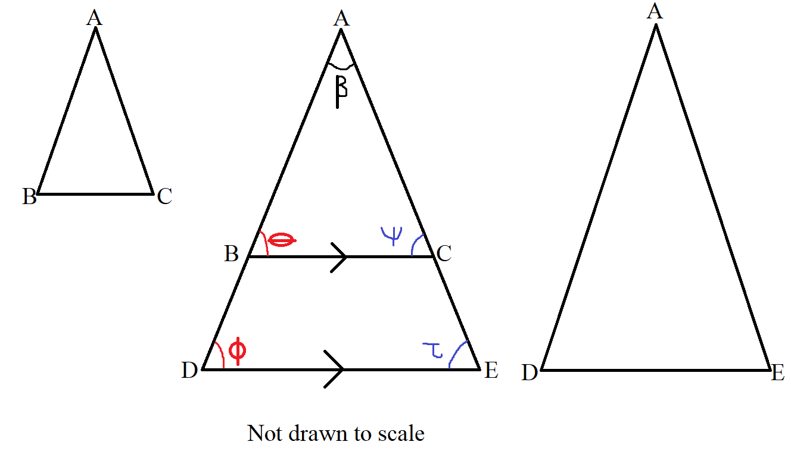
Beginning with the 2nd triangle (the triangle in the middle):
$
|BC| || |DE| ...diagram \\[3ex]
\theta = \phi ...corresponding\;\;\angle s\;\;are\;\;equal \\[3ex]
\psi = \tau ...corresponding\;\;\angle s\;\;are\;\;equal \\[3ex]
\implies \\[3ex]
\triangle ABC \sim \triangle ADE...AA\sim\;\;Postulate \\[3ex]
\implies \\[3ex]
\dfrac{AB}{AD} = \dfrac{AC}{AE} = \dfrac{BC}{DE}...ratio\;\;of\;\;corresponding\;\;sides \\[5ex]
\dfrac{AB}{AC} = \dfrac{AD}{AE} = \dfrac{BC}{DE}...ratio\;\;of\;\;corresponding\;\;sides \\[5ex]
$
Let us review an example.
Example:
curriculum.gov.mt

PRT is a triangle with points Q and S on PR and RT respectively such that SQ is parallel to TP.
(a) Show that triangles RTP and RSQ are similar.
(b) Calculate the size of SQ
(c) Given that the area of triangle RTP is 35 $cm^2$, calculate:
(i) the area of triangle RSQ
(ii) the area of quadrilateral QSTP

$ (a) \\[3ex] \angle RQS = \angle RPT...corresponding\;\;\angle s\;\;are\;\;equal \\[3ex] \angle RSQ = \angle RTP ...corresponding\;\;\angle s\;\;are\;\;equal \\[3ex] \angle QRS = \angle PRT...common\;\;\angle\;\;R \\[3ex] Any\;\;of\;\;the\;\;two\;\;can\;\;be\;\;used\;\;for\;\;the\;\;AA\sim\;\;Postulate \\[3ex] \therefore \triangle RTP \sim \triangle RSQ...AA\sim\;\;Postulate \\[3ex] (b) \\[3ex] \dfrac{|SQ|}{7.8} = \dfrac{7.2}{7.2 + 6} \\[5ex] \dfrac{|SQ|}{7.8} = \dfrac{7.2}{13.2} \\[5ex] |SQ| = \dfrac{7.8(7.2)}{13.2} \\[5ex] |SQ| = \dfrac{56.16}{13.2} \\[5ex] |SQ| = 4.254545455 \\[3ex] |SQ| \approx 4.3\;cm \\[3ex] (c) \\[3ex] (i) \\[3ex] Scale\;\;Factor = \dfrac{|RQ|}{|RP|} \\[5ex] Area\;\;Ratio = \dfrac{|RQ|^2}{|RP|^2} ...Area\;\;Ratio-Scale\;\;Factor\;\;Theorem \\[5ex] Also: \\[3ex] Area\;\;Ratio = \dfrac{Area\;\;of\;\;\triangle RSQ}{Area\;\;of\;\;\triangle RTP} \\[5ex] \implies \\[3ex] \dfrac{Area\;\;of\;\;\triangle RSQ}{Area\;\;of\;\;\triangle RTP} = \dfrac{|RQ|^2}{|RP|^2} \\[5ex] \dfrac{Area\;\;of\;\;\triangle RSQ}{35} = \dfrac{(7.2)^2}{(7.2 + 6)^2} \\[5ex] \dfrac{Area\;\;of\;\;\triangle RSQ}{35} = \dfrac{(7.2)^2}{(13.2)^2} \\[5ex] \dfrac{Area\;\;of\;\;\triangle RSQ}{35} = \dfrac{51.84}{174.24} \\[5ex] Area\;\;of\;\;\triangle RSQ \\[3ex] = \dfrac{35 * 51.84}{174.24} \\[5ex] = \dfrac{1814.4}{174.24} \\[5ex] = 10.41322314 \\[3ex] \approx 10.4\;cm^2 \\[3ex] (ii) \\[3ex] Area\;\;of\;\;Quadrilateral\;QSTP = Area\;\;of\;\;\triangle RTP - Area\;\;of\;\;\triangle RSQ ...diagram \\[3ex] = 35 - 10.41322314 \\[3ex] = 24.58677686 \\[3ex] \approx 24.6\;cm^2 $
Section 3
References
Chukwuemeka, S.D (2016, April 30). Samuel Chukwuemeka Tutorials - Math, Science, and Technology.
Retrieved from https://www.samuelchukwuemeka.com
Bittinger, M. L., Beecher, J. A., Ellenbogen, D. J., & Penna, J. A. (2017). Algebra and Trigonometry:
Graphs and Models (6th ed.).
Boston: Pearson.
Martin-Gay, E. (2016). Geometry (1st ed.).
London, England: Pearson.
Sullivan, M., & Sullivan, M. (2017). Algebra & Trigonometry (7th ed.).
Boston: Pearson.
Alpha Widgets Overview Tour Gallery Sign In. (n.d.). Retrieved from http://www.wolframalpha.com/widgets/
Authority (NZQA), (n.d.). Mathematics and Statistics subject resources. www.nzqa.govt.nz. Retrieved
December 14,
2020, from https://www.nzqa.govt.nz/ncea/subjects/mathematics/levels/
CrackACT. (n.d.). Retrieved from http://www.crackact.com/act-downloads/
CMAT Question Papers CMAT Previous Year Question Bank - Careerindia. (n.d.).
https://www.careerindia.com. Retrieved
May 30, 2020, from https://www.careerindia.com/entrance-exam/cmat-question-papers-e23.html
CSEC Math Tutor. (n.d). Retrieved from https://www.csecmathtutor.com/past-papers.html
Desmos. (n.d.). Desmos Graphing Calculator. https://www.desmos.com/calculator
DLAP Website. (n.d.). Curriculum.gov.mt.
https://curriculum.gov.mt/en/Examination-Papers/Pages/list_secondary_papers.aspx
Free Jamb Past Questions And Answer For All Subject 2020. (2020, January 31). Vastlearners.
https://www.vastlearners.com/free-jamb-past-questions/
Geogebra. (2019). Graphing Calculator - GeoGebra. Geogebra.org.
https://www.geogebra.org/graphing?lang=en
GCSE Exam Past Papers: Revision World. Retrieved April 6, 2020, from
https://revisionworld.com/gcse-revision/gcse-exam-past-papers
HSC exam papers | NSW Education Standards. (2019). Nsw.edu.au.
https://educationstandards.nsw.edu.au/wps/portal/nesa/11-12/resources/hsc-exam-papers
JAMB Past Questions, WAEC, NECO, Post UTME Past Questions. (n.d.). Nigerian Scholars. Retrieved February
12, 2022,
from https://nigerianscholars.com/past-questions/
KCSE Past Papers by Subject with Answers-Marking Schemes. (n.d.). ATIKA SCHOOL.
Retrieved June 16, 2022, from https://www.atikaschool.org/kcsepastpapersbysubject
Myschool e-Learning Centre - It's Time to Study! - Myschool. (n.d.). https://myschool.ng/classroom
Netrimedia. (2022, May 2). ICSE 10th Board Exam Previous Papers- Last 10 Years. Education Observer.
https://www.educationobserver.com/icse-class10-previous-papers/
NSC Examinations. (n.d.). www.education.gov.za.
https://www.education.gov.za/Curriculum/NationalSeniorCertificate(NSC)Examinations.aspx
OpenStax. (2019). Openstax.org. https://openstax.org/details/books/algebra-and-trigonometry
Papua New Guinea: Department of Education. (n.d.). www.education.gov.pg.
https://www.education.gov.pg/TISER/exams.html
School Curriculum and Standards Authority (SCSA): K-12. Past ATAR Course Examinations. Retrieved
December 10, 2020, from https://senior-secondary.scsa.wa.edu.au/further-resources/past-atar-course-exams
West African Examinations Council (WAEC). Retrieved May 30, 2020, from
https://waeconline.org.ng/e-learning/Mathematics/mathsmain.html
51 Real SAT PDFs and List of 89 Real ACTs (Free) : McElroy Tutoring. (n.d.).
Mcelroytutoring.com. Retrieved December 12, 2022,
from
https://mcelroytutoring.com/lower.php?url=44-official-sat-pdfs-and-82-official-act-pdf-practice-tests-free